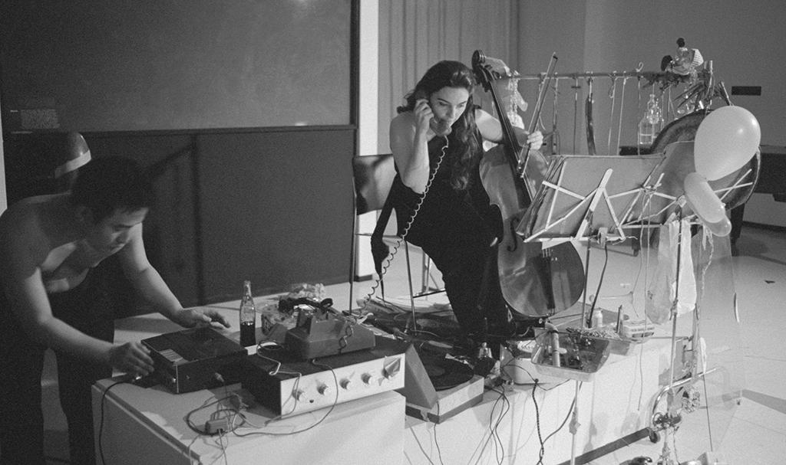

Week 2 · Semester 1
Finding the Exchange
Where I was stuck
Preparing for the Week 2 presentation was frustrating because my topic felt completely overwhelming. It was far too big and vague, to the point where anything could belong to it. I didn't know how to funnel it down or pinpoint what I actually wanted to investigate.
How I got here
Everything traced back to my Year 2 work on agency and authorship in AI-assisted coding. Trying to slide-deck my project forced a fundamental question: What actually separates us as human designers from an AI? Is it thinking, depth, experience, or process? I kept landing on process and thinking.
My supervisors, Andreas and Kapi, pointed me toward 1960s cybernetics and computer art literature. Reading it was an eye-opener—the initial societal pushback against computers back then mirrors our current panic around AI:
1960s (e.g., Taylor): Hostility around whether machine outputs counted as "art," and aggressive debates over authorship, while early pioneers saw an opportunity to explore new systems.
Today (e.g., Inie et al.): Fears around job displacement, loss of control, credit, and authentic human voice.
This gave me my foundational keywords: cybernetics, conversation theory, feedback loop, and sense-making.
The lightbulb moment was realizing that the final output matters far less than the internal process: the doing, reasoning, and negotiation of agency.
Designers are trained to own a project from start to finish. "Vibe coding" with AI flips that completely. The creative process shifts from pure execution to finding a way to communicate with a machine to get what you want.
Works that inspired me
Art by Telephone (MCA Chicago)

Art by Telephone MCA Chicago. Credit: MCA
The phone instructions became the artwork itself. The message continuously broke down in translation, showing the flow of communication rather than a polished artifact. This feels directly relevant to prompt engineering—what we mean gets degraded or shifted by the time the AI returns an output.
Musicolour (Gordon Pask)
Musicolour Gordon Pask. Credit: Pask, Gordon: Musicolour
Pask built a system engineered to get "bored" if given repetitive inputs, forcing the human performer to constantly adapt. The interaction itself was the study. This was where I first saw friction and pushback treated as active components of a creative system.
Presentation Feedback Breakdown
Scope: Too broad. I agree—I need to set strict parameters and construct tangible tests.
Readings: Strong historical range (Burnham, Pask, Schön, Boden), but lacked contemporary AI and Research through Design (RtD) contexts. I've started reading into AI co-working literature to figure out how to extract structured data from these reflective experiments.
Historical References: Lecturers noted my references skew toward older media art. I think context matters—these historical frameworks give us a lens to understand current AI without reinventing the wheel.
The Feedback Loop: I realized I still couldn't explain a "feedback loop" beyond a basic ping-pong exchange (I input ➔ computer responds ➔ I respond). I need to ground this deeper.
What I now think
I used to think my project was about what AI produces and who owns it. Now I see it is about the exchange itself—that is where the reasoning, control issues, and struggle actually happen.
I also have a working hypothesis: human conversation inherently has friction because both sides clarify and push back, whereas interacting with AI often feels frictionless or overly compliant. But is friction the same thing as challenge, or am I mixing up two different mechanics?
Moving Forward
— Narrow the scope.
— Define the parameters.
— Find a way to explore the exchange by testing it, not only reading about it.